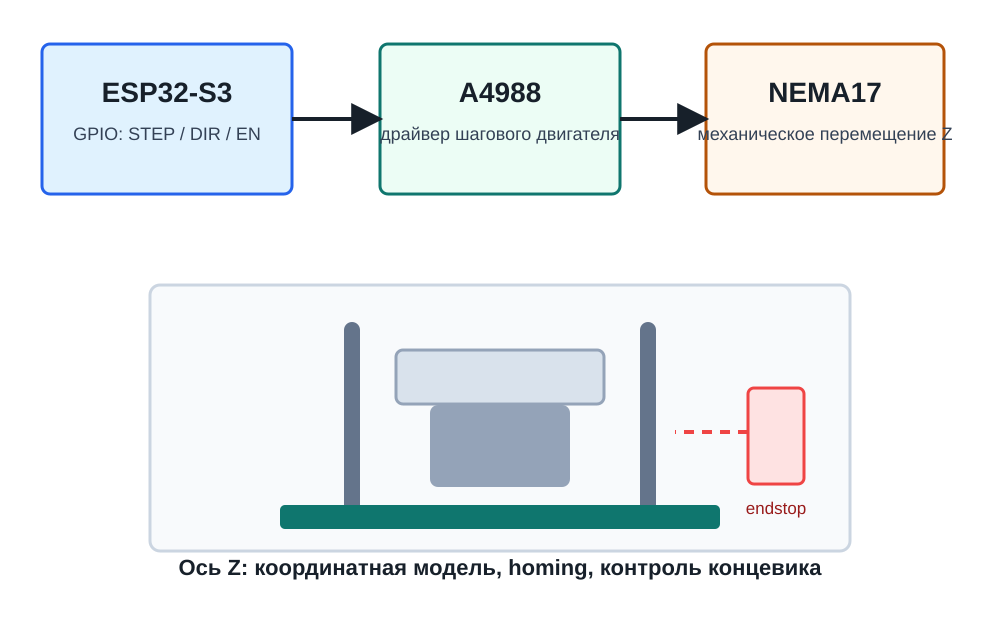
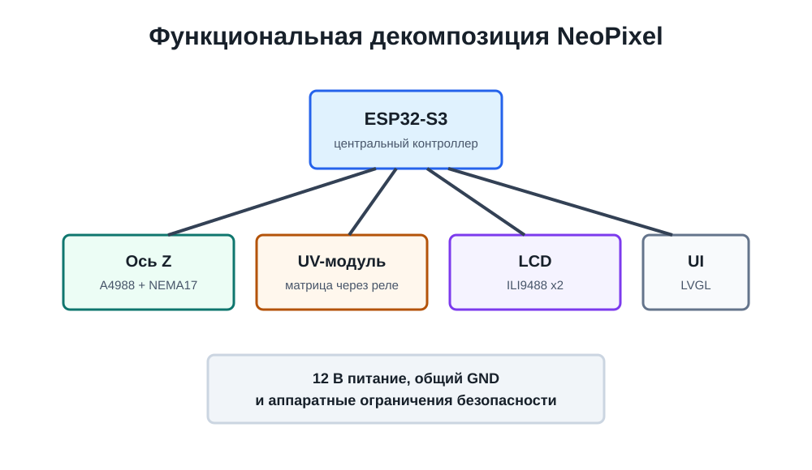

Проектная деятельность · малый фотополимерный принтер
NeoPixel
Учебно-инженерный проект, посвященный проектированию, программной доработке и экспериментальной верификации компактного фотополимерного 3D-принтера с управляемой осью Z, UV-экспозицией и перспективной интеграцией дисплейного модуля.
Аннотация
О чем этот сайт
Сайт фиксирует академическое описание проекта NeoPixel, его техническую рамку, текущий прогресс и информационные материалы, необходимые для понимания логики разработки малого фотополимерного 3D-принтера.
Инженерная постановка
NeoPixel рассматривается как учебный объект комплексной инженерной деятельности: в нем одновременно присутствуют задачи силовой электроники, микроконтроллерного программирования, механического позиционирования, световой экспозиции, интерфейсного проектирования и последующей экспериментальной настройки технологического процесса.
В существующем репозитории наиболее оформленным программным фрагментом является модуль базового управления осью Z. Он задает переход от абстрактной команды перемещения к конкретной генерации STEP-импульсов, работе с направлением движения и контролю концевого выключателя.

Системный контур
Проект как совокупность подсистем
Управление движением
Ось Z обеспечивает повторяемое позиционирование платформы, а значит напрямую влияет на стабильность слоя, геометрию изделия и воспроизводимость результата. В учебном проекте эта часть выступает базовым уровнем аппаратно-программной надежности.
Экспозиционный модуль
UV-матрица и релейное управление должны сформировать контролируемое световое воздействие на фотополимер. Эта подсистема пока описана концептуально и ожидает последующей реализации в firmware.
Интерфейс и визуализация
Планируемые дисплеи ILI9488 и библиотека LVGL позволяют рассматривать будущий интерфейс не только как панель управления, но и как инструмент технологического мониторинга процесса печати.

Медиа
Демонстрационная модель печати
Анимационный блок показывает упрощенную последовательность фотополимерной печати. Он нужен как визуальная иллюстрация: платформа поднимается, возвращается к расчетной позиции, после чего выполняется засветка фотополимера.